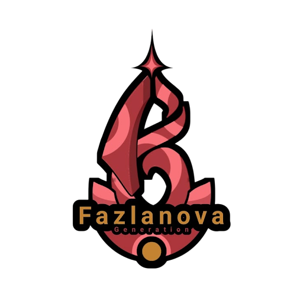

Waktu
25 April 2028
15.00 WIB - Selesai

Musik hymne akan diputar otomatis
Menghitung detik menuju momen bersejarah pertemuan kembali seluruh keluarga besar angkatan kita.
Fazlanova Generation bukan sekadar nama angkatan. Ini adalah simbol perjuangan bersama, tawa, dan mimpi-mimpi besar yang kita bangun bersama.
Tanggal 25 April 2028 dipilih sebagai titik temu untuk merayakan pencapaian, melepas rindu, dan memperkuat ikatan keluarga besar kita.
25 April 2028
15.00 WIB - Selesai
Akan Diumumkan
Informasi menyusul
Red & Gold Elegance
Nuansa merah, emas, atau hitam